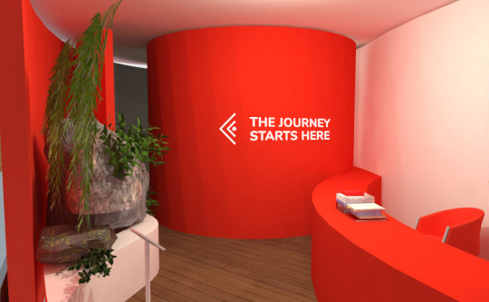

Este proyecto consistió en la creación de un espacio expositivo concebido para diversificar y descentralizar el turismo peruano, activar el turismo interno y difundir información sobre atractivos turísticos desconocidos al público tanto nacional como internacional, para exponer la renovada oferta turística peruana a todo el público con potencial a realizar turismo en el Perú.
Figura 1: Polos de la marca Peruvian Hinterlands, con uno de los collage representativos estampados.
El espacio expositivo, además, debía mostrar los lugares turísticos identificados, educar al público que lo visita sobre ellos y sobre el Perú, llevar a que los visitantes experimenten y disfruten distintos aspectos de la oferta turística y que también degusten la gastronomía característica de los atractivos turísticos a resaltar.
Antes de desarrollar el espacio, sin embargo, se realizó el proceso de generación de una identidad para la marca creada.
La Identidad
Se buscó crear un logotipo dinámico y referente a tipografía peruana, y acompañarlo con tramas inspiradas en textiles y patrones de hilo utilizados en el Festival de Paucartambo, uno de los atractivos turísticos impulsados por el proyecto.
Figura 2: El logotipo de Peruvian HinterlandsFigura 3: Mockup de una caja de misterio ofrecida dentro del espacio, con merchandising y piezas artesanales dentro.
Además, se crearon ilustraciones en estilo collage para diferenciar la marca aun más, utiilizando elementos representativos de los atractivos turísticos peruanos.
Figura 4: Mockup de una caja de misterio ofrecida dentro del espacio, con merchandising y piezas artesanales dentro.
El Espacio
El lugar expositivo se diseñó para encajar dentro de ferias de turismo abiertas tanto a un público general y a personas relacionados a las industrias turísticas, hoteleras, etc.
Por otro lado, se designó un área dentro del espacio a cada una de las actividades inicialmente requeridas, para que los visitantes puedan activamente degustar, experimentar, observar y tomar parte de las distintas partes de la exhibición.
Figura 5: Vista superior del primer piso del espacio de exhibición, mostrando las diversas áreas planteadas.
En el primer nivel del espacio, se encuentran: una exhibición a escala del Complejo Arqueológico de Tantamayo, un escenario para presentar bailes y música de Danzantes de Tijeras y del Festival de Paucartambo; además de una recepción y una zona de reuniones para personas interesadas en viajar o conocer más sobre la oferta turística peruana.

Figura 6: Recepción y entrada a el resto del espacio expositivo.Figura 7: Zona posterior al los asientos del escenario, donde yace una Eco-Isla que mostraría vegetación perteneciente a la Reserva Natural Tingo María.Figura 8: Área de reuniones cerca a la salida del espacio, pensada para ofrecer información a más profundidad sobre el turismo peruano.
Por otro lado, en el segundo piso de la exhibición, se encuentran un bar para degustar bebidas y comidas pertenecientes a Tingo Maria, y una zona utilizada para mostrar partes de la reserva natural de la misma región en pantallas panorama.
Figura 9: La subida al segundo piso consiste de una rampa que pasa por una colección de máscaras (a escala) del carnaval de Paucartambo.Figura 10: Bar de degustación de comidas y bebidas de Tingo María, junto a la entrada al salón Panorama.Figura 11: Interior del salón Panorama, con imágenes y videos de la Reserva de Tingo María proyectadas en las pantallas.